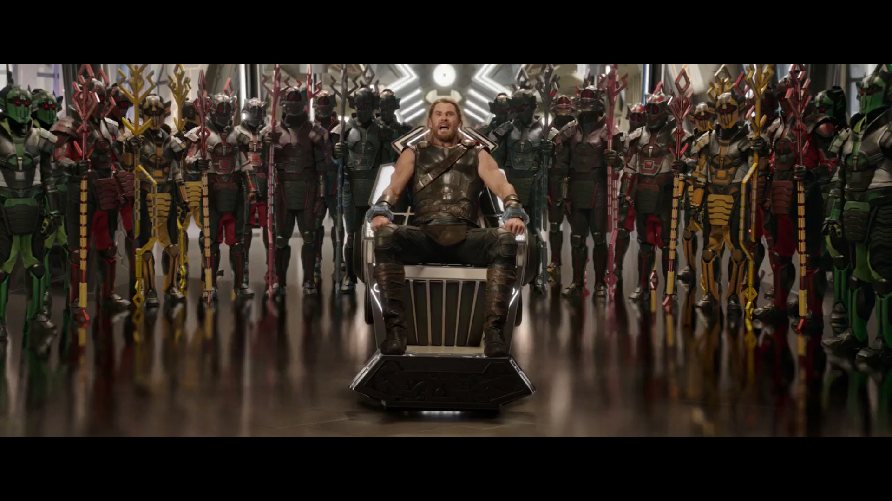

Thor está preso al otro lado del universo y con su poderoso martillo destruido en mil pedazos, ahora se enfrenta a una carrera contra el tiempo. Su objetivo es volver a Asgard y parar el Ragnarök (la batalla del fin del mundo), antes de que esto signifique la destrucción de su planeta natal y el fin de la civilización asgardiana a manos de una todopoderosa y nueva amenaza, la diosa asgardiana de la muerte, Hela. Pero, primero deberá sobrevivir a una competición de gladiadores, en el planeta Saakar, donde se enfrentará a su compañero de Los Vengadores, Hulk.
Necesidades
Dispositivo
Mjolnir
Primera aparición
0:04:39
Necesidades
El Mjolnir es un arma del Dios Thor, empleada para luchar contra cualquier enemigo y derrotarlo. Para sorpresa de Thor, en esta película se demostrará que el verdadero poder no proviene del martillo, sino de él mismo.
Dispositivo
Portal teletransportador
Primera aparición
0:18:15
Necesidades
El Dr. Strange abre un portal para que Thor y Loki vayan directamente a visitar a su padre, Odin, al que Loki había suplantado en Asgard.
Dispositivo
Controlador de nave espacial
Primera aparición
0:29:50
Necesidades
Cuando Thor llega a Saakar, lo atrapan los habitantes de allí hasta que llega Valquiria y lo libera con la ayuda de unos controladores de su nave espacial que imitan los movimientos de sus brazos.
Dispositivo
Disco de descargas eléctricas
Primera aparición
0:30:15
Necesidades
Valquiria lanza a Thor un pequeño disco que controla ella con un mando, y que es capaz de emitir descargas eléctricas, dejando inconsciente al que lo lleva puesto.

Dispositivo
Silla paseo holográfico
Primera aparición
0:36:25
Necesidades
Cuando Thor es capturado en Saakar, se despierta en una silla que va recorriendo el universo y explicándole dónde está. Cuando el viaje termina, se ve que la silla ha estado inmóvil todo el tiempo.
Dispositivo
Sensor de mano
Primera aparición
1:13:52
Necesidades
Para que Thor pueda huir de Saakar necesita encender la nave en la que llegó Hulk, y para ello se requiere una identificación dactilar.
Dispositivo
Holograma
Primera aparición
1:14:32
Necesidades
En la nave, Thor pulsa unos botones y consigue que salga un holograma de Viuda Negra, que calma a Hulk y se convierte de nuevo en Bruce Banner.
Tecnologías involucradas
Ahora analizaremos las tecnologías que serían necesarias para la creación de los dispositivos/interfaces que se describen en la película, distinguiendo aquellas que estaban disponibles en el momento de la producción y aquellas que son inventadas.
Tecnologías disponibles en el momento de la producción
Dentro de las tecnologías disponibles podemos destacar los controladores de dispositivos mediante gestos (obviamente de naves espaciales no), los sensores basados en partes del cuerpo, como la mano o el ojo, los hologramas, e incluso una silla para disfrutar de la realidad virtual, como en la película.
Tecnologías imaginadas en el momento de la producción
En esta película predominan los elementos de ciencia ficción, por lo que son imaginados y no existen aún en la realidad. Varios ejemplos pueden ser las naves espaciales que aparecen a lo largo de la historia, los portales teletransportadores o el conocido y poderoso Mjolnir, el martillo de Thor.
Impacto
Esta película se estrenó hace apenas unos meses, por lo que aún no ha dado tiempo a suponer un impacto real en la creación de nuevos dispositivos, pero sí se habían desarrollado algunas de las tecnologías antes del estreno.
El primer ejemplo es Myo, un controlador que se coloca en el antebrazo y que permite controlar de forma inalámbrica una amplia lista de dispositivos de recreación o domóticos. Ha sido creado por Thalmic Labs, y funciona mediante un biosensor que permite utilizar la actividad eléctrica de los músculos para controlar de forma inalámbrica diferentes dispositivos digitales.
Nos puede recordar al controlador de la nave espacial que utiliza Valquiria en la película.
El segundo ejemplo es Roto VR, una silla pensada para disfrutar de una mayor inmersión en la experiencia que ofrece la realidad virtual. Gracias a ciertos sensores, se consigue que la silla gire acompañando el giro de nuestra cabeza o el movimiento de nuestros pasos en el juego.
Es muy parecida a la silla en la que sientan a Thor cuando lo capturan, donde va dando un paseo por el espacio, inmerso en él, aunque realmente la silla está inmóvil.
Por último y como curiosidad, Caleb Kraft, principal responsable del blog de electrónica Hack a Day, se aventuró a fabricar él mismo el Mjolnir de Thor. El martillo de Caleb es capaz de lanzar descargas a distancia de hasta 80.000 voltios mediante el uso de una bobina Tesla. El martillo puede utilizarse para encender a distancia bombillas o fluorescentes, además de lanzar chispas azules hacia los objetos metálicos.